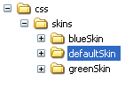

The goal of this tutorial is to explain how to create and use CSS skin with Jawr.
This feature is available from the version 3.3 of Jawr.
Jawr allows you to define CSS skins which will be available to the users.
In fact, Jawr allows you to define different version of the same file, which will be available to the user depending on the current Skin chosen by the user and its locale.
To define CSS skins, Jawr uses a directory hierarchy convention.
The user needs to define the default CSS skin root directory. All the directory defined at the same level will be considered as a skin variant.
To define the default skin root directory, the user must set the property jawr.css.skin.default.root.dirs.
This property defines the list of default CSS root directories. So with Jawr, you can handle multiple CSS skin root directories.
For instance, if you define the default skin root directory as : /css/skins/defaultSkin.
And you have a directory structure like this :

If you set the Jawr configuration as:
jawr.css.skin.default.root.dirs=/css/skins/defaultSkin
Jawr will treat blueSkin and greenSkin as variants of defaultSkin.
So here we’ve defined 3 skins for our application.
To reference the CSS skin resources in our bundle, we need to prefix your resources with skin: in order to use the JawrSkinGenerator. Using the Jawr skin feature, you are not forced to defined every CSS for each skin variant, you only need to define the one which is different from the default skin, because Jawr will try to get the one from the default skin if it don’t find the resource in the current skin.
If we continue with our previous example. In the defaultSkin directory, we define on css named theme.css and a directory named treeview in which we have treeview.css and treeview-panel.css. in each other skins, we define only theme.css.

We will define the bundle mapping of our bundle like this:
jawr.css.skin.default.root.dirs=/css/skins/defaultSkin
...
jawr.css.bundle.skinnedBundle.id=/css/skinnedBundle.css
jawr.css.bundle.skinnedBundle.mappings=skin:/css/skins/defaultSkin/theme.css,skin:/css/skins/defaultSkin/treeview/treeview.css,\
skin:/css/skins/defaultSkin/treeview/treeview-panel.css
If we define our bundle like this, Jawr will create 3 variants of the skinnedBundle. One for defaultSkin, one for blueSkin and another one for greenSkin.
Here is the content of the different bundle
As stated before, Jawr will use the default skin resources if the resource doesn’t exist for the current skin.
It is also important to noticed that we are using only resources defined in the default skin resources in our bundle. You must not reference a resource which is not defined as a default skin resource if you are using the JawrSkinResourceGenerator.
At runtime, Jawr uses a cookie to define what is the value of the current CSS skin to use.
Jawr allows you to define the name of the cookie to use by using the following property :
| Property name | Type | Purpose | Default value |
|---|---|---|---|
| jawr.css.skin.cookie | String | The name of the cookie where the current user CSS skin name is stored. | jawrSkin |
By default the name of the cookie used is jawrSkin.
There are 3 attributes of the Jawr style tag, which can be related to the CSS skin.
| Attribute name | Type | Purpose | Default value | | alternate | Boolean | This flag is used to render link as an alternate style | false | | title | String | The title to use for the style | false | | displayAlternate | Boolean | This flag is used to render the skin variants of the CSS bundle as alternate style | false |
Please take a look at the Jawr style tag documentation for more detail.
Please check the quickstart tutorial for the instruction about Jawr installation in your project.
We will follow the example shown above.
# Add theme switcher
jawr.js.skinSwitcher.id=/js/skinSwitcher
jawr.js.skinSwitcher.mapping=skinSwitcher:switcher.js
jawr.css.skin.default.root.dirs=/css/skins/defaultSkin
jawr.css.bundle.skinnedBundle.id=/css/skinnedBundle.css
jawr.css.bundle.skinnedBundle.mappings=skin:/css/skins/defaultSkin/theme.css,skin:/css/skins/defaultSkin/treeview/treeview.css,skin:/css/skins/defaultSkin/treeview/treeview-panel.css
With this configuration, when you will start your application, Jawr will generate in Jawr working directory 3 different bundles named respectively named :
Recreate the directory structure shown below.
Write a test CSS file named /css/skins/defaultSkin/theme.css and add the following content:
.style1 {
color : #000;
}
Write a test CSS file named /css/skins/defaultSkin/treeview/treeview.css and add the following content:
.treeview {
color : #000;
}
Write a test CSS file named /css/skins/defaultSkin/treeview/treeview-panel.css and add the following content:
.treeview-panel {
color : #000;
}
Write a test CSS file named /css/skins/blueSkin/theme.css and add the following content:
.style1 {
color : #0080FF;
}
Write a test CSS file named /css/skins/blueSkin/treeview/treeview-panel.css and add the following content:
.treeview-panel {
color : #0101DF;
}
Write a test CSS file named /css/skins/greenSkin/theme.css and add the following content:
.style1 {
color : #04B404;
}
Write a test JSP page and add the following content:
<%@ taglib uri="http://jawr.net/tags" prefix="jawr" %>
<%@ page contentType="text/html;charset=UTF-8" %>
<html>
<head>
<jawr:style src="/css/skinnedBundle.css" displayAlternate="true" media="all"/>
<jawr:script src="/js/skinSwitcher.js" />
</head>
<body>
...
<select name="theme" id="skinSwitcher" onchange="JAWR.skin.switchToStyle(this.value);">
<option value=""> </option>
<option value="blueSkin">Blue Skin</option>
<option value="greenSkin">Green Skin</option>
</select>
<div class="style1">div content</div>
<div class="treeview">treeview content</div>
<div class="treeview-panel">treeview panel content</div>
</body>
</html>
Deploy your application to a server and open the JSP you created. Switch to another skin by clicking selecting it from the select box.
Jawr allows you to define skin bundle which can vary depending on the current skin but also on the current user locale. Like for the standard skin feature, Jawr use a convention on the directory structure to handle the skin/locale variant.
Here are examples of directory structure for skin, which take in account the user locale.
 There is 2 ways to define the directory structure. You can define the Skin first like in the first picture, or you can use the locale as parent directory first. To determine which directory structure, you want to use, you have to set jawr.css.skin.type.mapping.
There is 2 ways to define the directory structure. You can define the Skin first like in the first picture, or you can use the locale as parent directory first. To determine which directory structure, you want to use, you have to set jawr.css.skin.type.mapping.
To set the mapping directory structure as skin-locale (first example) you need to use the value skin_locale.
To set the mapping directory structure as locale-skin (second example) you need to use the value locale_skin.
By default the value of jawr.css.skin.type.mapping is skin_locale.
Here are the settings to configure Jawr for Skin-Locale directory structure (Example 1) :
jawr.css.skin.default.root.dirs=/css/skins/defaultSkin/en_US # We can omit the following setting as it's the default one #jawr.css.skin.type.mapping=skin_locale
In the configuration above, we define that the default skin will be “defaultSkin” and the default locale will be “en_US”.
Here are the settings to configure Jawr for the Locale-Skin directory structure (Example 2) :
jawr.css.skin.default.root.dirs=/css/skins/en_US/defaultSkin jawr.css.skin.type.mapping=locale_skin
In the configuration above, we define that the default skin will be “defaultSkin” and the default locale will be “en_US”.
Here we will configure Jawr to handle the Skin-Locale directory structure example.
We will set up the Jawr configuration file as follow :
# Add theme switcher
jawr.js.skinSwitcher.id=/js/skinSwitcher
jawr.js.skinSwitcher.mapping=skinSwitcher:switcher.js
jawr.css.skin.default.root.dirs=/css/skins/defaultSkin/en_US
# We can omit the following setting as it's the default one
#jawr.css.skin.type.mapping=skin_locale
jawr.css.bundle.skinnedBundle.id=/css/skinnedBundle.css
jawr.css.bundle.skinnedBundle.mappings=skin:/css/skins/defaultSkin/en_US/theme.css,skin:/css/skins/defaultSkin/en_US/treeview/treeview.css,skin:/css/skins/defaultSkin/en_US/treeview-panel.css
Recreate the directory structure of example 1 shown above. Download famfamfam icon sets from the following link Copy the flags PNG icons in the /img/flags/ folder.
Write a test CSS file named /css/skins/defaultSkin/fr_FR/theme.css and add the following content:
.style1 {
color : #000;
}
.flag {
background-image : #ffffff url("../../../../img/flags/fr.png") no-repeat;
height : 20px;
padding-left : 20px;
}
Write a test CSS file named /css/skins/defaultSkin/en_US/theme.css and add the following content:
.style1 {
color : #000;
}
.flag {
background-image : #ffffff url("../../../../img/flags/us.png") no-repeat;
height : 20px;
padding-left : 20px;
}
Write a test CSS file named /css/skins/defaultSkin/en_US/treeview/treeview.css and add the following content:
.treeview {
color : #000;
}
Write a test CSS file named /css/skins/defaultSkin/en_US/treeview/treeview-panel.css and add the following content:
.treeview-panel {
color : #000;
}
Write a test CSS file named /css/skins/blueSkin/en_US/theme.css and add the following content:
.style1 {
color : #0080FF;
}
.flag {
background-image : #ffffff url("../../../../img/flags/us.png") no-repeat;
height : 20px;
padding-left : 20px;
}
Write a test CSS file named /css/skins/blueSkin/fr_FR/theme.css and add the following content:
.style1 {
color : #0080FF;
}
.flag {
background-image : #ffffff url("../../../../img/flags/fr.png") no-repeat;
height : 20px;
padding-left : 20px;
}
Write a test CSS file named /css/skins/greenSkin/en_US/theme.css and add the following content:
.style1 {
color : #04B404;
}
.flag {
background-image : #ffffff url("../../../../img/flags/us.png") no-repeat;
height : 20px;
padding-left : 20px;
}
Write a test CSS file named /css/skins/greenSkin/fr_FR/theme.css and add the following content:
.style1 {
color : #04B404;
}
.flag {
background-image : #ffffff url("../../../../img/flags/fr.png") no-repeat;
height : 20px;
padding-left : 20px;
}
Write a test JSP page and add the following content:
<%@ taglib uri="http://jawr.net/tags" prefix="jawr" %>
<%@ page contentType="text/html;charset=UTF-8" %>
<html>
<head>
<jawr:style src="/css/skinnedBundle.css" displayAlternate="true" media="all"/>
<jawr:script src="/js/skinSwitcher.js" />
</head>
<body>
...
<select name="skinSwitcher" id="skinSwitcher" onchange="JAWR.skin.switchToStyle(this.value);">
<option value=""> </option>
<option value="blueSkin">Blue Skin</option>
<option value="greenSkin">Green Skin</option>
</select><br/><br/>
<div class="flag">This flag is determined by the user locale. <br/>There are only 2 flag available : One of France and one for US.</div>
<div class="style1">div content</div>
<div class="treeview">treeview content</div>
<div class="treeview-panel">treeview panel content</div>
</body>
</html>
Deploy your application to a server and open the JSP you created. Switch to another skin by clicking selecting it from the select box and switch the locale settings of your browser to “French” or “English US”.